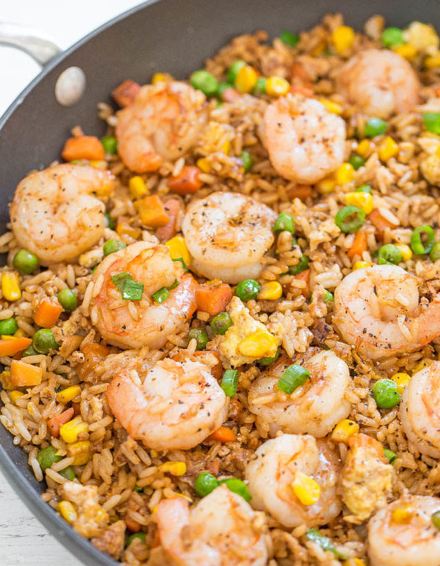

Shrimp Fried Rice
This is an easy, one-skillet recipe that’s ready in 20 minutes and tastes better than takeout; it’s healthier and not greasy. To save time if you don’t have leftover rice on hand or don’t want to cook a batch, use two pouches of ready-to-serve rice. The shrimp is tender and juicy. I use fresh shrimp but you can use frozen shrimp that’s already been cooked. There’s garlic, ginger, green onions, sesame oil, and soy sauce for layers of flavor while peas, carrots, corn, and bits of egg add texture.
The shrimp is tender and juicy. I use fresh shrimp from the butcher because I think it has the best flavor but if you’re in an ultimate hurry you can use frozen shrimp that’s already been cooked and all you have to do is thaw it.
There’s garlic, ginger, green onions, sesame oil, and soy sauce for layers of flavor while peas, carrots, corn, and bits of egg add texture. It’s a perfect weeknight meal when you’re in a rush want a break from the usual chicken dinner.